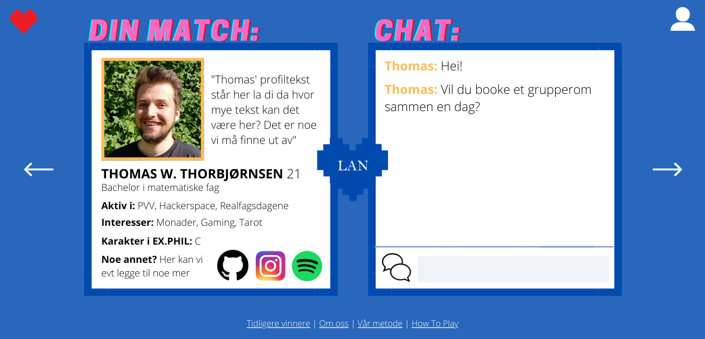
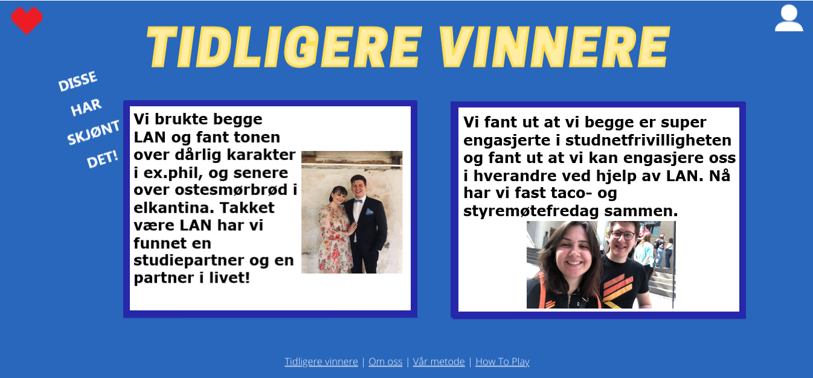
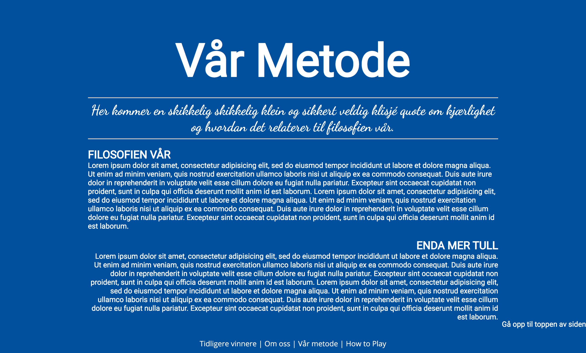
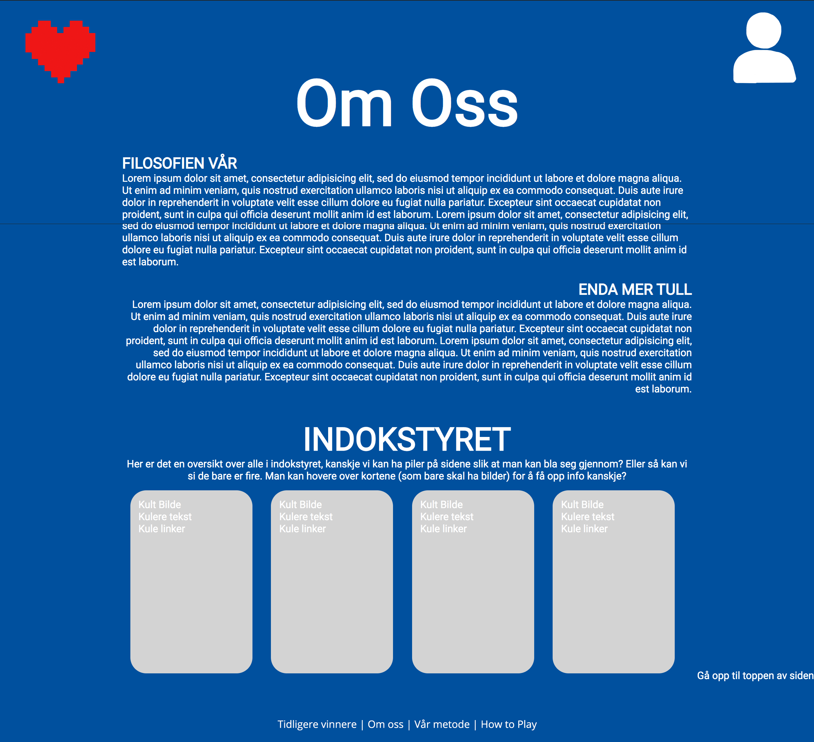

-
Forsiden
Forsiden har en blå bakgrunnsfagre som går igjen i på alle sidene. I bunnen av siden har vi en navbar med link til 4 andre undersider som man har tilgang til hele tiden, selv når man ikke er logget inn eller registert.
Dette er "Tidligere vinnere", "Om oss", "Vår metode" og "How to play".
Disse skal ligge der hele tiden for å være et slags salgstriks for å få brukere.
På denne siden har vi prøvd å balansere siden og har en rolig bakgrunn slik at de klare fargene på teksten og designet kommer tydeligere frem og at en bruker blir dratt mot det å velge å registrere seg.
Pilen som går fra "start spillet her" til "nytt spill" tar mye oppmerksomhet fordi denne teksten er plassert på utsiden av boksene som egentlig skaper et "cleant" utseende.
Når man ser på en sammensattekst så ser man i en Z der man starter på overskriften, så går videre "start spiller her" som igjen drar en videre til den mest nøytrale boksen, men på grunn av de sterke fargene så blir man dratt enda videre til høyre.

-
Registeringssiden
Formålet med registreringssiden er å gi spilleren en måte å si hvem hen er. På denne siden skal det ikke være mye som trekker oppmerksomheten og den skal være minimalistisk for å forstyrre minst mulig når man skriver inn personalia. Fargene som brukes om siden er dermed primært hvitt og blått. Det er viktig at spilleren har NTNU mail, for å verifisere at de er student. Videre kan de legge inn litt av hvem de er, når de er født, interesser, bilde av seg selv og karakter i ex.phil, du vet, alt det viktig når man ser etter noen andre. Siden skal være oversiktlig og enkel å navigere, hvor viktig momenter utheves med farge. Vi vil gjerne trekke oppmerksomhet mot knappen som lar deg starte spillet, så den uthever vi f.eks. med fargen rød. Dersom man kommer til denne siden etter å ha tastet inn epost og passord fra forsiden skal dette bli automatisk fyllt inn. Som alltid er den samme navbaren som du kjenner til fra alle de andre sidene på bunnen.

-
Hovedsiden
Hovedside 1
Etter at man logget inn eller registret seg, kommer man inn på hovedsiden. Vi har laget "to" hovedsider der den første er en blå side med et stort rødt hjerte på. Dette hjertet kan man da trykke på og komme inn på den "andre" hovedsiden som er en pop-up på siden vi allerede er på. Under er et pikselhjerte i en sterk rød farge som banker helt til man trykker på den. I venstre hjørnet er det et profilikon som man kan trykke på for å komme inn på sin profil. Nederst på siden så vil navbaren "Tidligere vinnere", "Om oss", "Vår metode" og "How to play", dette er fordi vi mener at de burde være tilgjengelige hele tiden og er gode salgstriks for å holde spilleren interessert. Hovedsiden er første sted man kommer etter registrering og innlogging slik at det blir en side som må være klar enkel og lett å komme seg videre fra. Når vi trykker på hjerte så vil det føles som om matchen kommer opp som en pop-up som er det vi kaller hovedside 2..

Hovedside 2
I hovedside 2 er der man ser matcher. Man kommer dit via å trykke på hjertet på hovedside 1. Det er en pil på venstre og høyre side midt på siden, slik at man kan navigere i matchene sine. Navbaren vil fremdeles være synlig i bunnen med de samme som tidligere. Profilikonet på høyre side vil også fremdeles være der med mulighet til å komme til profilen. Dette gjør det lett for brukeren å navigere seg dit en vil fordi siden er enkel og oversiktlig. Vi har valgt dette designet fordi det er lett å bla mellom de ulike matchene samtidig som man får fult fokus på en match om gangen. Chatte-funksjonen tar en stor del av nettsiden som kan påvirke folk til å lettere ta i bruk chatten.

-
Profilsiden
Profilen er designet for å reflektere registreringssiden på en meningsfull måte. Dette vil si at profilen er nesten identisk med registreringssiden, for å gi inntrykk av kontinuitet. Når man er på profilsiden er man innlogget på profilen sin, dette uthever vi ved å bruke subtile endringer over hele siden. Passordfeltet er byttet til Bytt passord, du kan endre bilde istedenfor å laste opp bildet, og det legges trykk på at du er innloget ved at knappen som tar deg til profilen din fremdeles vises. Dette gjør at det er enkelt og intuitivt å redigere profilen sin og lagre den for fremtidige matcher. Som alltid finner du den gode gamle navbaren på bunnen, det eneste trygge elementet over alle sidene. Alle disse knepene gjør at denne siden vil være svært intuitiv å bruke ettersom du har vært på den før du i det hele tatt har besøkt den.

-
How to play
På "How to play" siden har vi de samme karakteristiske fargene som bare spretter ut av skjermen (Se designoversikt for mer informasjon). Denne siden er utformet for å gi spillerene innføring i hvordan man spiller spillet og evt tips på hvordan man kommer langt. Reglene for spillet skal være såpass enkle at man kan forklare det med en setning for å få spilleren hekta så fort som mulig. Tips og triks legges ved for å øke spillerens selvtillit før hen har startet å spille. Fargene på overskriften følger konvensjonen gitt i design delen (estetikk over strategi). Nederst på siden vår finner du en navbar, som lar deg gå til de fleste undersidene (se sitemap). Øverst i høyre hjørne har vi byttet ut profil knappen med en spill nå knapp. Denne knappen vil enten ta deg med til registreringssiden om du ikke er innlogget eller til hovedsiden hvor du enten kan spille eller redigere profilen din. Dette valget gjør vi får å få spilleren til å føle seg nærmere spillet enn det hen egt er.

-
Tidligere vinnere
Bakgrunnsfargen på denen siden er den samme blåfargen som de andre for å ha et tema.
Overskriften her er samme font og farge som på forsiden, men her er den mye større og er midtstilt for å ha et gjennomgående tema.
I øvre venstre hjørnet er det et rødt piksel hjerte som går igjen på de flere av sidene.
I øvre høyre hjørnet er det et profilikon som man kan trykke på for å komme seg til profilen, logge seg inn eller registrere seg.
Under overskriften har vi to store bokser med en 8 pxl bord i mørk blå som på de andre sidene.
Bakgrunnen i boksene er hvit og fonten er en type sans-serif.
Inne i boksene er det tekst skrevet av to par som har møtt hverandre via siden vår med fiktive historier og bilder av "disse parene".
Vi har med dette for å kunne vise til at nettsiden og matchingen vår fungerer.
Disse fiktive senarioene skal reflektere rådene vi skal ha på "How to play" siden og derfor er relevante for en aktuell bruker eller en som mister motivasjon.
På skrå står det skrevet en tekst der det står "Disse har skjønt det" som er en referanse til "How to play" siden, der det står skrevet med pil mot "tidligere vinnere" siden.
Denne teksten er i hvit som ikke egentlig har blitt brukt så mye på de andre siden, men den blender mer inn enn de andre skarpere fargene vi har brukt tidligere.
Navbaren er fremdeles den samme som gir kontinuitet på designet og at man ikke trenger å lete etter sidene som ligger der.

-
Vår metode
Denne siden skal ha samme blå bakgrunnsfarge som de andre for å styrke helthetsfølelsen. Overskriften skal være en stor i hvitt med en sans-serif font, slik som de andre sidene har.
Under der ønsker vi en underoverskrift i samme font som hovedoverskriften. Her skal det stå om vår filosofi bak algoritmen og hvordan denne kan brukes til å forbedre dating på NTNU. Deretter kommer det et avsnitt under som handler om hvordan algoritmen opererer og hvorfor dette fungerer i praksis.
Denne og om oss skal ha veldig enkle design for å være enkle å lese og oversiktlige. Kombinasjonen av det stilrene, tematiske repitisjoner og en tydelig knapp vil føre til at det er lett å komme i gang med å spille.
I bunn så vil vi ha navbaren som de andre sidene har. Dette er igjen for at det skal være et helhetlig tema og følelse av kontinuitet.
PS: Merk at fontene i denne mockupen ikke representerer det endelige produktet helt enda. mockupen ble laget i HTMl og er litt mer ad-hoc enn de andre, men det går vel greit. Ingenting er jo det endelige "produktet".

-
Om oss
Her skal vi også ha samme bakgrunn som de andre sidene. Overskriften skal være hvit i store bokstaver i samme sans-serif som de andre sidene.
Under har vi en underoverskrift i lik font som hovedoverskrift. Her skal all tekst være hvit. I teksten skal vi fortelle om hvem kunden vår er (nemlig Indok-styret), hva de driver med og hvorfor vi har et behov for en egen NTNU datingside, fordelt i to avsnitt. I disse avsnittene vil indok ha muligheten for å forklare deres grunn for å starte LAN og skrive litt om hvem de er. Nederst på siden vises et utvalg av personer i indokstyret, de som står bak initiativet. Vi har tenkt å lage disse i en typ visitkortstil, med bilde og dersom man hover over bildet får man mer info om personen
På bunnen har vi samme navbar som på de andre sidene.
